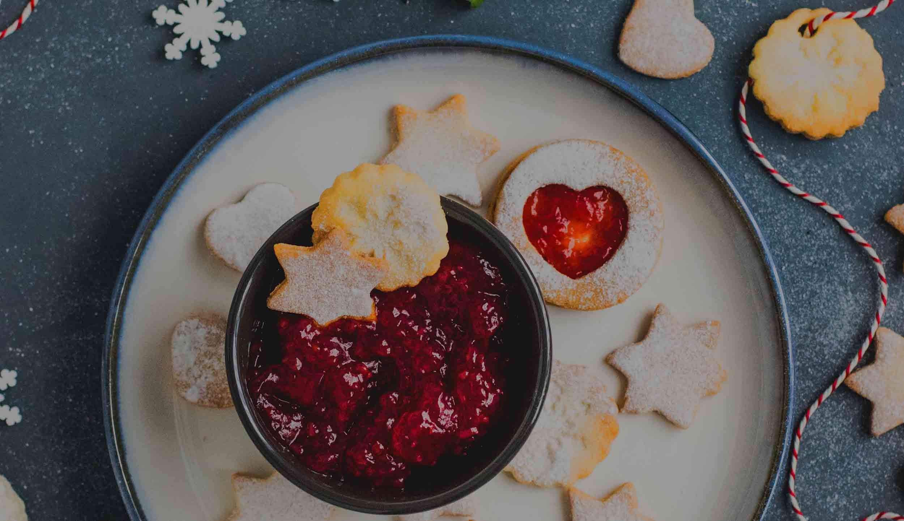
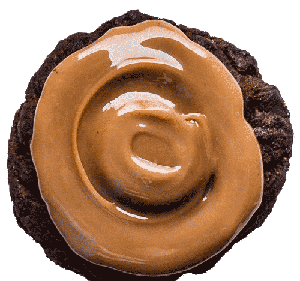

<!DOCTYPE html>
<html lang="en-ca">
<head>
  <meta charset="utf-8">
  <title>Recipe book</title>
  <meta name="viewport" content="width=device-width,initial-scale=1">
  <link rel="shortcut icon" href="favicon.ico">
  <link rel="icon" type="image/png" href="favicon-196.png">
  <link href="css/modules.css" rel="stylesheet">
  <link href="css/grid.css" rel="stylesheet">
  <link href="css/type.css" rel="stylesheet">
  <link href="css/main.css" rel="stylesheet">
</head>
<body>

  <header role="banner" class="linzer pad-b-2">
    <nav class="mobile" role="navigation">
      <div id="menuToggle">
        <input type="checkbox" />
        <span></span>
        <span></span>
        <span></span>
        <ul id="menu">
          <a href="recipes.html"><li>Recipes</li></a>
          <a href="#"><li>Shop</li></a>
          <a href="#"><li>Cookie club</li></a>
          <a href="#"><li>Blog</li></a>
          <a href="#"><li>Contact</li></a>
        </ul>
      </div>
    </nav>
    <nav class="desktop text-left pad-t gutter" role="navigation" id="nav" tabindex="0">
      <ul class="list-group-inline gutter-1-2">
        <li class="gutter-1-2"><a class="link-box gutter-1-4 milli" href="recipes.html">Recipes</a></li>
        <li class="gutter-1-2"><a class="link-box gutter-1-4 milli" href="#">Shop</a></li>
        <li class="gutter-1-2"><a class="link-box gutter-1-4 milli" href="#">Cookie Club</a></li>
        <li class="gutter-1-2"><a class="link-box gutter-1-4 milli" href="#">Blog</a></li>
        <li class="gutter-1-2"><a class="link-box gutter-1-4 milli" href="#">Contact</a></li>
      </ul>
    </nav>
    <div class="pin-right-top island">
      <i class="icon i-64">
        <a href="index.html"></a>
      </i>
    </div>
    <div class="center-content valign-middle grid pad-t-2 push-2">
      <div class="unit xs-1 s-1 m-1 l-1 xl-1 pad-t unit-content-center">
        <h1 class="text-center tenamega bold pad-t push-1-2">Linzer cookies</h1>
      </div>
    </div>
  </header>

  <main>
    <p class="text-center max-length gutter milli pad-t push-1-4">The secret to these festive cookies is the addition of toasted almond flour! It’s best to use a seedless jam, but any flavour will do! Use your favourite or traditional raspberry, like we did.</p>
    <p class="bold text-center max-length gutter milli push-2">Makes about 3 dozen cookies</p>

    <div class="grid gutter-2">
      <div class="unit xs-1 s-1 m-1 l-1-2 xl-1-2">
        <h2 class="zetta">Ingredients</h2>
        <ul>
          <li class="milli">1 ½ cups (3 sticks) unsalted butter, softened</li>
          <li class="milli">1 ¼ cups granulated sugar</li>
          <li class="milli">1 ½ cups whole blanched almonds</li>
          <li class="milli">2 eggs, room temperature</li>
          <li class="milli">3 cups all-purpose flour</li>
          <li class="milli">2 tsp kosher salt</li>
          <li class="milli">1 tsp baking powder</li>
          <li class="milli">1 tsp vanilla extract</li>
          <li class="milli">1 cup best quality seedless raspberry jam</li>
          <li class="milli">1 cup icing sugar</li>
          <li class="milli">All-purpose flour for rolling</li>
        </ul>
      </div>
      <div class="unit xs-1 s-1 m-1 l-1-2 xl-1-2">
        <h2 class="zetta">Preparation</h2>
        <dl>
          <dt class="exa bold">1</dt>
          <dd>In a large skillet over medium heat, toast the almonds until just golden brown, and allow to cool to room temperature. Process in a food processor until fine, taking care not to overprocess into almond butter. Place ground almonds in a bowl with flour, salt and baking powder, whisk together and set aside.</dd>
          <dt class="exa bold">2</dt>
          <dd>In the bowl of a stand mixer, cream together the butter and sugar on medium speed until combined, about two minutes. Add in the eggs one at a time, stopping the mixer to scrape down the sides of the bowl between eggs. Add the almond and flour mixture and vanilla extract and mix on low speed until just combined.</dd>
          <dt class="exa bold">3</dt>
          <dd>Divide the dough into thirds in the bowl, and wrap each third shaped into a disc tightly in plastic wrap, for at least two hours or overnight. Dough can be frozen at this point for up to two weeks.</dd>
          <dt class="exa bold">4</dt>
          <dd>After dough is chilled, remove all three discs from the fridge and let them rest at room temperature for 20 minutes. Lightly flour your rolling surface and unwrap one third of the dough, kneading a few times to make it pliable. Roll dough 1/8” thick, sprinkling with flour as needed to prevent sticking, and place on a rimmed baking sheet lined with parchment paper.</dd>
          <dt class="exa bold">5</dt>
          <dd>Repeat with the other two discs of dough, stacking the dough sheets on top of the first one. Wrap with plastic and return to the refrigerator for at least 30 minutes.</dd>
          <dt class="exa bold">6</dt>
          <dd>Preheat oven to 325F. Remove one sheet of dough from the refrigerator. Using a 2” round fluted cookie cutter, cut rounds and arrange on a parchment lined baking sheet. Follow with a second sheet, and after rounds are transferred, use a 1” fluted cutter to cut a round out of the middle. Continue pattern with last sheet of dough. Gather the cut scraps, knead together and shape into a disc. This dough can be used to cut more cookies after chilling.</dd>
          <dt class="exa bold">7</dt>
          <dd> Bake cookies in preheated oven for until just golden on the bottom, 12-15 minutes, rotating pan halfway through baking. Remove and cool on a cooling rack.</dd>
          <dt class="exa bold">8</dt>
          <dd>Spread the whole cookies with 1 tsp jam each, leaving a little border around the edge uncovered. Using a sieve, sprinkle the cookies with the centres cut out with icing sugar. Place sugared cookie on top of jam cookie and sandwich together. Cookies can be baked ahead, and sandwiched together before serving.</dd>
        </dl>
      </div>
    </div>

    

    <div class="gutter-2 push-2">
      <h2 class="other pad-t nina text-center">Other recipes</h2>
      <div class="grid">
        <div class="text-center unit xs-1 s-1 m-1-3 l-1-3 xl-1-3 push">
          <a class="cookie-btn" href="trail.html">
            
            <h3>Trail mix cookies</h3>
          </a>
        </div>
        <div class="text-center unit xs-1 s-1 m-1-3 l-1-3 xl-1-3 push">
          <a class="cookie-btn" href="chip.html">
            
            <h3>Chocolate chip cookies</h3>
          </a>
        </div>
        <div class="text-center unit xs-1 s-1 m-1-3 l-1-3 xl-1-3 push">
          <a class="cookie-btn" href="chocolate.html">
            
            <h3>Spiced chocolate crinkle cookies</h3>
          </a>
        </div>
      </div>
      <div class="text-center">
        <a class="btn btn-ghost gutter island-1-2" href="#">See all recipes</a>
      </div>
    </div>

    <div class="news text-center gutter">
      <div class="pad-t pad-b">
        <h3 class="new">Subscribe to our newsletter</h3>
        <form class="text-center">
          <div>
            <label for="email"><email></label>
            <input id="email" type="email" placeholder="me@me.com">
          </div>
          <div class="pad-t">
            <button class="btn btn-ghost gutter" type="submit">Subscribe</button>
          </div>
        </form>
      </div>
    </div>

  </main>

  <footer class="pad-t-1-2">
    <ul class="list-group-inline text-center pad-t-1-4 push-1-2">
      <li class="gutter-1-2 milli"><a class="link-box" href="#">Privacy policy</a></li>
      <li class="gutter-1-2 milli"><a class="link-box" href="#">Terms of use</a></li>
    </ul>
    <small class="pico text-center push-0 gutter-1-2">NOT YOUR GRANDMOTHER'S COOKIES © ALL RIGHTS RESERVED</small>
  </footer>

</body>
</html>
